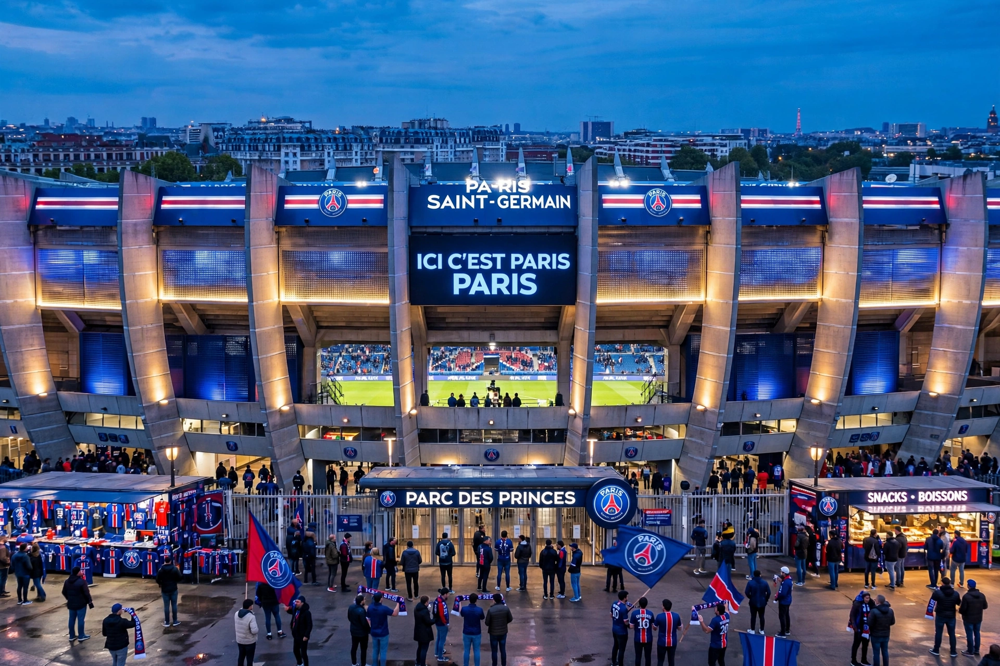

The Parc des Princes (French: [paʁk de pʁɛ̃s], "Park of the Princes") is an all-seater football stadium in the 16th arrondissement of Paris, France. It is the home of Paris Saint-Germain since 1974.

A stadium and velodrome stood on the site from 1897; it hosted Tour de France finishes, the 1938 and 1998 FIFA World Cups, European Cup finals and France national team matches. The present stadium, designed by Roger Taillibert with its distinctive concrete ribs, opened in 1972. The French national teams largely moved to the Stade de France in 1998, while PSG remained. The stadium hosted UEFA Euro 2016 matches and 2019 FIFA Women's World Cup games.
The Kop of Boulogne and Virage Auteuil ends are famous for ultras culture, tifos and intense atmosphere close to the pitch.
See also: Paris Saint-Germain